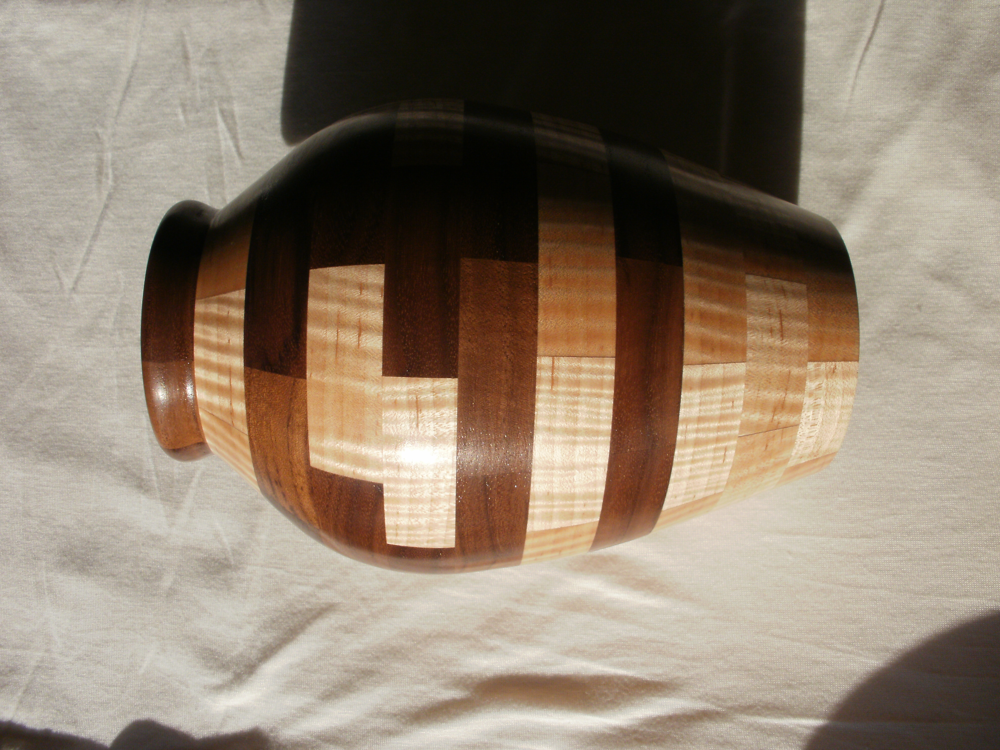
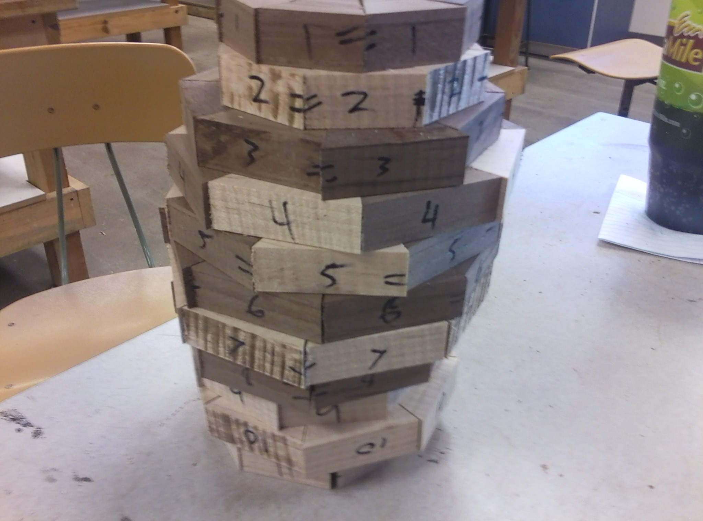

Wood Turning
Segmented vase project instructions.
Segmented Vase

Use a miter saw to cut small pieces at angles and then glue them together making rings with them. Depending on the size and design of the vase will determine the size and angle of the pieces for the rings as well as the number of rings.

The ring will then be glued to a board that will be connected to a face plate that attaches to the lathe. A grove will be then cut into the ring while on the lathe creating a place for a disk of wood to fill it creating the bottom of the vase. Then the outside of the ring will but cut to create the outside dimension grove and after placing the disk in the next ring is glued on and shaped on the inside with a curved design to hold the disk in place and shape the inside and a grove on the outside is also cut to the desired size. The next ring is glued on, and the inside of the ring is shaped to match the previous ring thickness and the outside top is cut to desired shape. This is continued until all rings are glued on, then shape the outside cutting down to the grove that was cut from each ring to ring to make the shape of the vase to appear. The inside is shaved down till it reaches final thickness and the whole thing is sanded.
The bottom is cut away from the scrap wood and then the bottom is finished shaped and sanded, finish is applied.